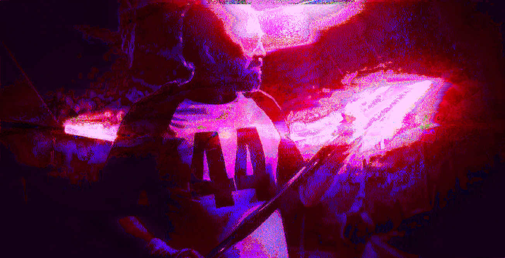
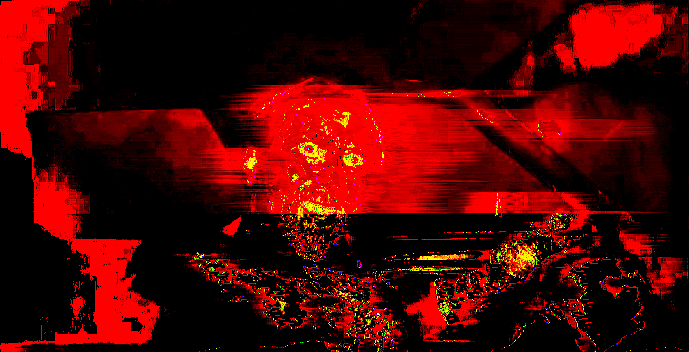
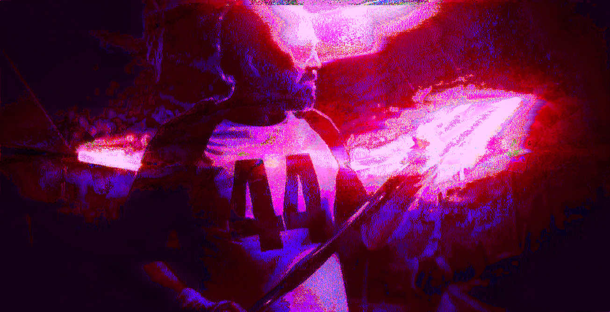
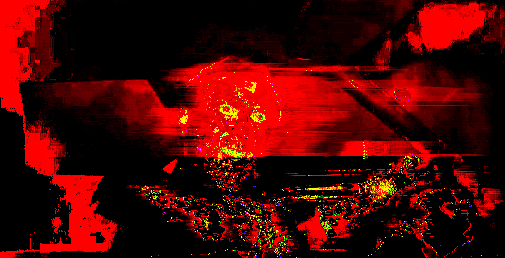

Mandy Glitch Series - Notepad ++, Photoshop, and Audacity - 2024
These glitched images are a series of stills from the movie Mandy, a 2018 film starring Nicolas Cage. Some major themes in the movie are loss and revenge, and the decent into madness. The glitches emphasize these themes and are meant to further visually represent the loss experienced and the further plunge of losing one's sanity.